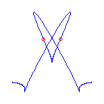
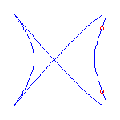
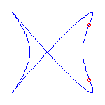

University of Wisconsin,
Madison
Frank Sottile
5 November 1999


|
Topology Seminar University of Wisconsin, Madison Frank Sottile 5 November 1999 |
 |
|
|
In 1876, Harnack proved that a real smooth plane curve of genus g has at most g+1 ovals, and he constructed curves with this maximum number of ovals. Real plane curves with maximally many ovals are called M-curves, and their study (part of Hilbert's 16th Problem) has been a major theme of real algebraic geometry this century. One reason is that the class of M-curves is sufficiently restricted to enable a topological classification, yet also sufficiently rich for this classification to be interesting.
This talk, which represents joint work with V. Kharlamov, will introduce a rational curve analog of M-curves. A general rational plane curve of degree d has 3(d-2) inflection points and (d-1)(d-2)/2 nodes. If it is not general, then it may have cusps as well as inflection points. A rational curve is maximally inflected if all of its inflection points and cusps are real. The existence of maximally inflected curves is a consequence of a recent result in the real Schubert calculus, and numerical techniques allow the construction of many examples.
Maximally inflected curves satisfy some topological restrictions; A maximally inflected curve can have at most (d-3)(d-2)/2 of its nodes be real, by the Klein and Plücker formulas. Using symbolic methods, we have found other, more subtle restrictions on the topology of maximally inflected curves.
Here are some maximally inflected quartic curves, which shows that all
possibilities allowed by the Klein and Plücker formulas occur, for
maximally inflected quartic curves.


 
